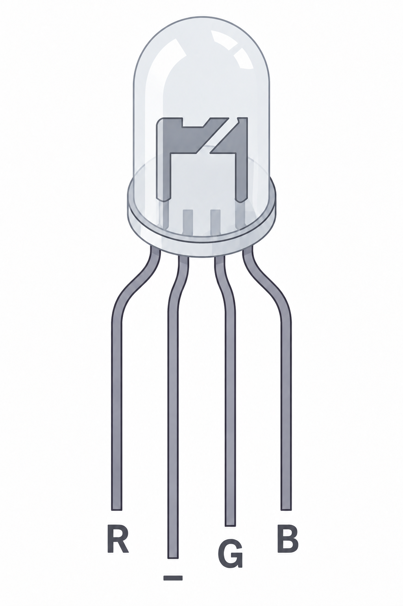

Kapitola 4: PWM a RGB LED
Praxe – Arduino | 3. ročník
Cíle kapitoly
V této kapitole se naučíme řídit jas LED pomocí pulzně šířkové modulace a následně samostatně nastavovat červenou, zelenou a modrou složku RGB LED.
Pulzně šířková modulace – PWM
PWM je metoda, která mění průměrný výkon rychlým zapínáním a vypínáním digitálního signálu. Poměr doby zapnutí k délce celé periody nazýváme střída neboli duty cycle.
Čím déle je signál v logické jedničce, tím vyšší je průměrný výkon a tím více LED svítí.

Funkce analogWrite()
PWM nastavujeme pomocí funkce analogWrite(). Druhý parametr je hodnota od 0 do 255.
const byte pinLed = 9;
void setup() {
pinMode(pinLed, OUTPUT);
}
void loop() {
analogWrite(pinLed, 0);
delay(1000);
analogWrite(pinLed, 128);
delay(1000);
analogWrite(pinLed, 255);
delay(1000);
}Pozor: Na Arduino UNO podporují PWM piny označené symbolem ~: 3, 5, 6, 9, 10 a 11.
RGB LED

RGB LED kombinuje v jednom pouzdře tři LED diody: červenou (R), zelenou (G) a modrou (B).
Každou složku lze ovládat samostatně. Kombinací jejich jasů můžeme vytvořit mnoho různých barev.
RGB LED má čtyři vývody. Tři patří jednotlivým barvám a jeden je společný. Podle typu jde o společnou katodu nebo společnou anodu.
V této kapitole používáme RGB LED se společnou katodou. Každá barevná složka musí mít vlastní sériový rezistor.
Zapojení RGB LED k Arduinu
Použijeme PWM piny D9, D10 a D11. Každou barevnou složku připojíme přes samostatný rezistor 220 až 330 Ω.
const byte pinCervena = 9;
const byte pinZelena = 10;
const byte pinModra = 11;
void setup() {
pinMode(pinCervena, OUTPUT);
pinMode(pinZelena, OUTPUT);
pinMode(pinModra, OUTPUT);
}
void loop() {
analogWrite(pinCervena, 255);
analogWrite(pinZelena, 0);
analogWrite(pinModra, 0);
}Míchání barev
Výsledná barva vzniká kombinací hodnot R, G a B. Každá složka může mít hodnotu od 0 do 255.
| Barva | Ukázka | R | G | B |
|---|---|---|---|---|
| Červená | 255 | 0 | 0 | |
| Zelená | 0 | 255 | 0 | |
| Modrá | 0 | 0 | 255 | |
| Žlutá | 255 | 255 | 0 | |
| Azurová | 0 | 255 | 255 | |
| Purpurová | 255 | 0 | 255 | |
| Růžová | 255 | 40 | 120 | |
| Bílá | 255 | 255 | 255 |
Úkol 1 – tři úrovně jasu
Zhasnuto, 50 % a 100 %
Vyberte jednu barevnou složku RGB LED. Jednotlivé podúkoly na sebe navazují.
- Nastavte hodnotu 0.
- Po jedné sekundě nastavte hodnotu 128.
- Po další sekundě nastavte hodnotu 255.
- Po další sekundě LED zhasněte.
- Celý cyklus nechte stále opakovat.
Úkol 2 – plynulá změna jasu
Rozsvícení a zhasnutí pomocí cyklu
- Pomocí cyklu for měňte jas od 0 do 255.
- V každém průchodu použijte analogWrite().
- Přidejte krátkou prodlevu.
- Druhým cyklem snižte jas zpět na 0.
- Program nechte stále opakovat.
Potenciometr ovládá jas
analogRead() vrací 0 až 1023, zatímco analogWrite() očekává 0 až 255. Rozsah převedeme funkcí map().
int hodnotaPotenciometru = analogRead(A0);
int jas = map(hodnotaPotenciometru, 0, 1023, 0, 255);
analogWrite(pinCervena, jas);Úkol 3 – řízení jasu potenciometrem
- Připojte potenciometr na A0.
- Načtěte jeho hodnotu funkcí analogRead().
- Převeďte ji funkcí map() na 0 až 255.
- Nastavujte jas jedné barevné složky.
- Vypisujte původní i převedenou hodnotu do sériového monitoru.
Úkol 4 – vlastní barvy
Míchání barevných složek
- Nastavte růžovou barvu.
- Nastavte žlutou barvu.
- Nastavte azurovou barvu.
- Nastavte bílou barvu.
- Vytvořte vlastní odstín a zapište jeho hodnoty R, G a B.
Úkol 5 – plynulý přechod barev
Modrá → zelená → modrá
- Nastavte počáteční modrou barvu.
- V cyklu zvyšujte zelenou složku.
- Ve stejném cyklu snižujte modrou složku.
- Po dosažení zelené vytvořte opačný přechod.
- Rychlost upravte pomocí delay().
Úkol 6 – tři potenciometry
Ruční mixáž RGB barev
Každý potenciometr bude nastavovat jednu barevnou složku.
- R → A0
- G → A1
- B → A2
- Načtěte hodnoty všech tří potenciometrů.
- Každou převeďte na rozsah 0 až 255.
- Výsledky odešlete na příslušné RGB výstupy.
- Vypisujte R, G a B do sériového monitoru.
- Namíchejte růžovou, oranžovou, fialovou a bílou.